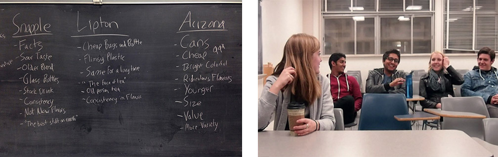
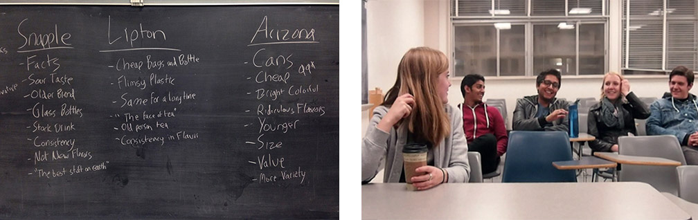
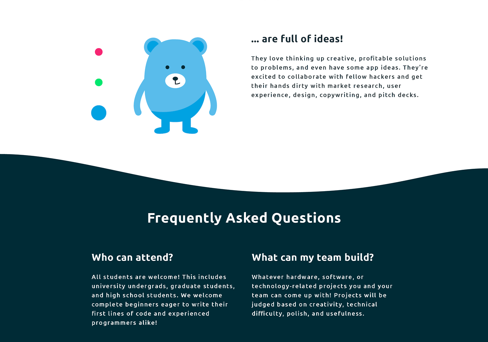
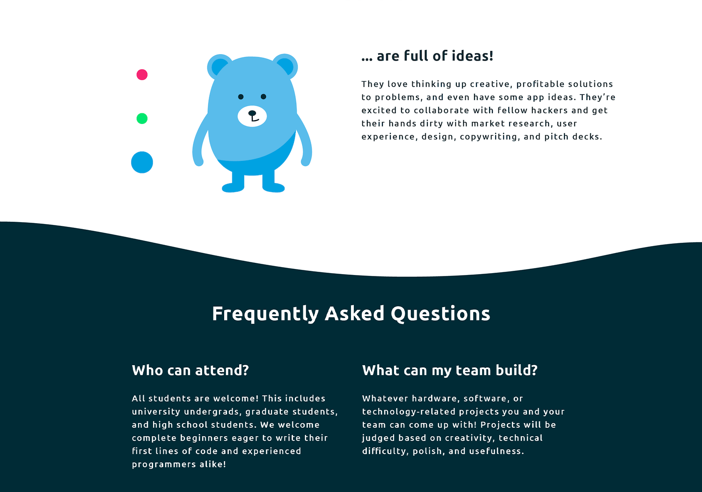

Design portfolio
Dora Sofia Parnanen
Design portfolio
Dora Sofia Parnanen
Research (2015–16)
Bruin Advertising & Marketing Team
Strategic Planning subteam member for Bruin Advertising & Marketing Team. Timeline: 1 year, leading up to a National Student Advertising Competition (NSAC). My role included market research, user interviews, and presenting actionable insights.

Bruin Ad Team placed 2nd out of 10 teams at the Southern California Regionals. The official NSAC 2016 prompt was to create a marketing campaign for the following 2017 year to grow Snapple™ in the US, measured by brand relevance, purchase frequency, and 'top of mind' brand awareness. Our Strategic Planning committee involved our full team in the research process in order to deliver a campaign strategy at NSAC from narratives we all understood.

Our team was divided into four subteams to reflect real roles within marketing. Our Strategic Planning subteam's goal was to create actionable insights about Snapple's consumers and competitive landscape. We expanded on and validated research with user focus groups and street interviews in targeted locations.
 


When our research phase was complete, we finalized a competitive landscape, target personas, and an actionable strategy for Snapple that met the NSAC prompt's defined business and brand goals. We fleshed out our consumer personas and provided clips and quotes from the consumer interviews so that our campaign insights would come from narratives we all came to understand. When we handed off our research deliverables to the other subteams, we wanted to hand off an understanding of the consumers, to tell their story and have some personality to play with.

Our Strategic Planning subteam ensured that any campaign decisions made by other subteams stayed relevant and effective at meeting the NSAC prompt, as well as making sure decisions were based off of our consumer and market research. It was important for our target consumers' narratives and campaign strategy to stay focused as the creative execution and distribution of the campaign kicked in. View our final comprehensive campaign.
Below: Excerpt from my application for AdTeam's Strategic Planning subcommittee. My research included scanning the internet for data and statistics about who uses the product and its competitors, as well as best practices for medical and sales interfaces and their landing pages. These revealed a target demographic and consumer habits, that the company could implement to convert specific users to purchase.

UX, Graphic design (2016)
LA Hacks
Website design and illustrations for LA Hacks, UCLA's annual hackathon with 1500 student participants and various company sponsors. Timeline: 6 months of working with my co-Designer and a team lead, and 3 weeks of working with developers and full team before event start. This project included handover of existing logo and goals from LA Hacks team, UX research, copy, graphic design, documentation, and attending LA Hacks.

Our website, copy, and branding successfully increased the amount of applicants who were female or from non-technical backgrounds, compared to previous years.

 

I worked on a design team within the larger student-run team of organizers, many of whom had been part of LA Hacks for multiple years. For 2016 the organizers had the goal of drawing in a range of participants, from students new to coding, to skillful returning coders, to hackathon minorities such as non-coders and females. My co-Designer and I paired our market research with participant feedback from LA Hacks 2015, to craft a visual style and website. As the event weekend neared, we brought in two designers to focus on apparel, event space design and videography. Together we incorporated the event's goals and user research throughout the hackathon experience.


With every design decision, from our website's structure to the hackathon shirt colors, it was important for my co-Designer and I to educate our full team about how users could perceive LA Hacks as inclusive and encouraging. We focused validation on event goals, target users, and best practices from research and event history.
Our full team would be representing LA Hacks 2016 on campus and online, so it was important for everyone to use social media and recruitment messaging that reflected our goals. We worked with our two developers to communicate goals and timeline constraints. We updated new features side by side as the website phased from its initial splash page teasing the event, to a site with detailed information about the event, to a day-of Live section with quick links that could be saved offline.


I wanted to keep learning after event go-live when my traditional 'Designer' role was done, to see how our organizers had executed this year's values and inclusivity goals. I stayed for much of the weekend, wearing my organizer shirt with the inviting pink bear, walking around the event floor during project demos, and attending lectures by women and minorities in tech to hear participants' and lecturers perspectives. Other members of our team would also attend the event and reflect on LA Hacks 2016 success metrics for what to improve for 2017.

Below: Concepts and visual design directions that my co-Designer and I presented to our team lead to reach a visual identity and website concept.


UX / UI (2016)
Dogtown Media
UX Designer for Dogtown Media, a fast-paced digital design and development agency in Los Angeles. Timeline: 6 months. My role included UX research, wireframing, client presentations, developer handover, and supporting with visual directions and UI design.
I worked with our clients both one-on-one and with our team of Senior Researcher, three UI Designers, Developer, and Business leads in a collaborative, mentorship environment. During my time we contributed to 8 mobile apps and one website.
I worked with our Lead Researcher on Kirb – 'The One-Tap Parking App'. We had meetings with Kirb's founder to actualize his business goal and creative vision. I created a market research presentation focused on service features, use cases, and best practices. We interviewed 7 users from Kirb's target location. In-person interviewees were presented with an early, clickable prototype on their own mobile device as I observed hesitations and expectations. Phone interviews focused on everyday habits and services used. Research drove user stories, user flow and wireframes.
Below: We used this same approach when presenting research and designs to our mobile app startup clients PepperJelly, Bump, and EMNTR.

Each week at Dogtown we presented some kind of design deliverable to various client personalities. For clients who are startups themselves, it is important to clearly outline the design-to-launch process and what is expected of all involved on the project.
To allow Designers and Developers to work simultaneously and save time for our startup clients, I marked back-end actions on user flows for our Lead Developer.

Although I started at Dogtown with a focus on creating wireframes, our team's agile workflow and multiple ongoing client projects allowed me to step in at different design stages, for example testing new features and UI styles on an existing project. I learned the importance of workflow transparency—sharing project statuses during team standup meetings and scheduling time for feedback from my coworkers.
Below: Visual design progression for mobile apps Spackle and Recovery Point.

After reviewing and iterating wireframes with our Lead Researcher and client, I would hand off final screens and user personas to our Visual Designer. If I worked on the UI design, I would hand over new screens and specifications to our Developer.

We encouraged our clients to first focus on MVP features and we then highlighted opportunities for future development and features. For one particular project in its second phase of design and development with Dogtown, I worked alongside our Senior Developer to implement a new feature in the existing App Store application HowFastWifi. This workflow was a condensed round of research, wireframing, and validation from our previous market research and current App Store reviews. I applied the existing app’s UI style to the new elements—a Settings screen and new map icon.
UX / UI (2014 & 2015)
Idean
Interaction Design Intern for Idean design agency in Palo Alto. Timeline: 2 consecutive summer internships. My role included user interviews and workshops, wireframing, client presentations, and UI directions.
During my first internship I was immersed in a client project for a smartwatch brand, adding a watchface customizer inside their existing mobile app. I worked closely with the client and Idean's Senior UX Designer to set up interactive research workshops and user interviews.
Above: Idean's Senior UX Designer and I categorized the types of customizations users could make on their watchfaces. Each customization would be controlled by one level of toggle in the interface. After these were decided, we created several wireframe iterations.
Below: After wireframes, I worked with Idean's Visual Designer to workshop UI directions and support with the final design. At the same time, I was designing the library of possible watchface features and combinations, working within the constraints of the smartwatch product's pixel and color limitations.
During my second internship I was tasked to research, design, and validate an interface that could provide business value to Idean. My company-specific solution was an internal repository tool for employees to find documentation and learnings from coworkers' previous projects. I researched internal industry tools and interviewed Idean employees.

I learned to explore various UX directions. I then applied Idean's internal design system to the UI and created a clickable Invision prototype. The project culminated in a presentation to various Team Leads within Idean, stressing the potential business value of the tool.


Graphic design (2017)
#NordicMade
Marketing material designs for Nordic Made at SXSW 2017. Timeline: 2 weeks from brief to approval. This project included a brief research phase, handover of existing logo & messaging from #NordicMade, one round of iterations, legal and partner approvals, and handover of final design assets to the client.


#NordicMade is a group of various Nordic startup companies and community leaders. Although the group had limited visual presence apart from their existing logo, they had a strong news presence, cultural themes, and community of people involved.
It was important to design visuals and copy that reflect a Nordic message, that do not isolate any one country or company, and that consider the lively SXSW tradeshow context. Designing for various mediums and contexts meant designing flexible visuals and content hierarchy systems. Detailed designs had to translate into simpler versions, such as for shirt printing constraints and to maximize visibility on a small scale or from far away.
Below: Initial logo directions and evolution.


Because of the live element of SXSW, presentation slides were finalized day-of, weeks after my handover. It was important to handover presentation slides as templates that the #NordicMade team could populate themselves. Particiapting companies were able to associate themselves with the #NordicMade brand at its physical SXSW booth and "engage with passerbys" successfully.


UX / UI (2016)
Perpetual
UX/UI Designer for Perpetual, a digital product design agency in New York City. Timeline: 3 months, two clients. My role included user research, prototype testing, wireframes, UI design, and stakeholder communication.
I was the main point of contact redesigning an internal tool for our client Thomson Reuters, a multinational mass media corporation. The tool automates news stories containing live data sets for the Reuters Editorial team of journalists and editors. The redesign would replace a current code-heavy and intimidating system, and save users' time.
Design challenges included complex user interactions such as navigating large datasets, encouraging users with limited coding experience to create and edit working code, encouraging cross-team file storage and collaboration, and reporting data connectivity errors.
It was important to familiarize Reuters, a large established corporation, with the agile workflow and deliverables of a UX agency. I created a Project Roadmap with design deliverables, hours estimates, and client actions. I had weekly video meetings with the Reuters Editorial and Development Team Leads from New York and London. During these meetings I validated decisions with research and best practices. The Reuters Team Leads had technical-heavy backgrounds and familiarity with business goals. Together we finalized the user flow and MVP features.
I successfully advocated for user testing before finalizing screens for development. We needed to validate the tool's user types, goals, and current workflow frustrations. The Reuters Team Leads and I interviewed 7 Editorial Team members on-site at the Reuters office in NYC. The users clicked through our Invision prototype and voiced frustrations, hesitations, and understanding.
I formatted our testing results into a stakeholder presentation with actionable insights. We added one round of UX/UI iterations based on the user interview feedback. For example, we made sure to only use copywriting that was familiar rather than technical.

I advocated to limit functionality to a focused MVP version. User adoption and widespread use were critical for the tool's success, and overwhelming functionality and business-value assumptions could risk retention. I highlighted opportunities for future features after gathering more user feedback from a working, developed tool.
After stakeholder sign-off on the MVP, I met with the Development Team to walk through the final screens and technical specifications. A Senior Designer at Perpetual worked with me to specify navigation, actions, default states, and responsive screen states.
Another client I worked with at Perpetual is Reliance Jio, one of India's expansive 4G lTE network providers. I took over the second phase of this project from a Senior Designer at Perpetual who had recently designed Jio Virtual Classroom for web and iOS. I worked with this Senior Designer to get a handover of project context and users. My main task was translating screens to tablet and Android.
I worked with our client's Project Manager and Developers, based in India. Working with the time difference, it was important to share designs and ask questions a few days ahead of schedule and stay active in Slack.
I kept the experience familiar from web, while researching best practices for responsive sizing and mobile learning. For example, emphasizing 'live chat' can deliver text content in small, digestible chunks for mobile learning while also meeting the client's goal of real-time user interactions. For Android, primary actions need to be shown rather than hidden.
One challenge was working within constraints of the product's live video software, when designing overlays and interactions. And for copy, the app was designed with language translations in mind, as it would be used throughout India, sometimes with very long words.
I additionally produced a video teaser of the product in use, focusing on its mobile and collaborative potential in India's public schools. I storyboarded, sourced stock footage, and shot supporting scenes in our Perpetual office of the app prototype in use. I edited the video strategically, working around challenges of not being on-side at India's schools. The video was presented by the Jio Education Team to the Reliance Jio Executive Team at Jio's companywide 2016 Demo Day.